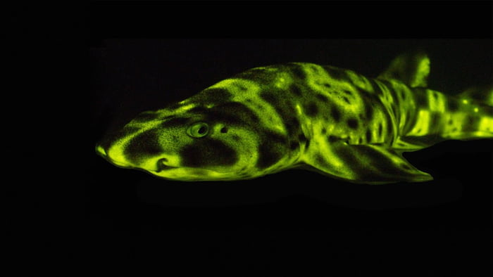

Lifespan and Reproduction
Scientists do not know exactly how long chain catsharks live because there is still limited research about their lifespan. However, some chain catsharks have lived for at least nine years in captivity. These sharks reproduce by laying eggs instead of giving birth to live young. The female lays eggs inside protective cases that are sometimes called mermaid's purses. The eggs attach to underwater objects, such as rocks or other structures, using thin tendrils. Baby chain catsharks can take around seven to twelve months to hatch.

Special Abilities and Conservation
One interesting fact about chain catsharks is that they can produce a natural glow under certain types of blue light. This ability is called biofluorescence, and it makes them especially interesting to scientists. Researchers study this feature to better understand how certain ocean animals interact with light. Chain catsharks are also considered harmless to humans because of their small size and shy behavior. They are currently classified as Least Concern by the International Union for Conservation of Nature. This means they are not presently considered threatened with extinction. Even though they are not currently considered endangered, scientists continue studying them to learn more about their populations and the role they play in the ocean.
